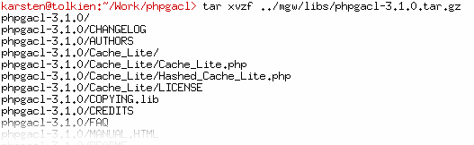
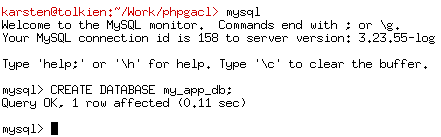
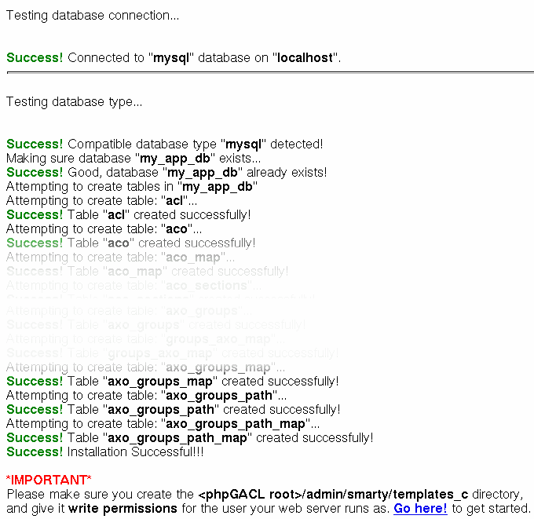
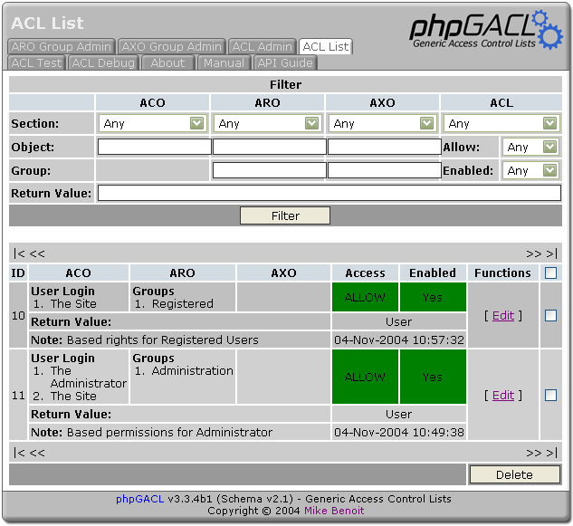
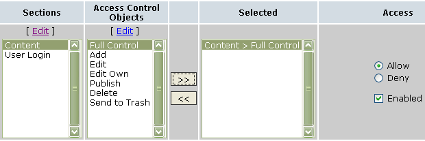
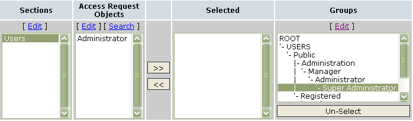
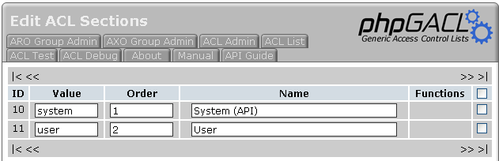
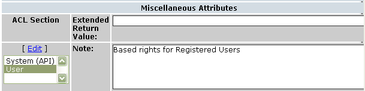

Generic Access Control Lists with PHP
Mike Benoit <
James
Russell <
james-phpgacl@ps2-pro.com
>
Karsten Dambekalns <
k.dambekalns@fishfarm.de
>
Copyright © 2002-2006 Mike Benoit
Copyright © 2003, James Russell
Copyright © 2003, Karsten Dambekalns
Document Version: 60
Last Updated:
Table of Contents 2
Who is responsible for it? 4
Understanding Access Control 5
Who/Where 5
Who/Where 6
Defining access control with phpGACL 6
Multi-level Groups 8
How does phpGACL determine permissions? 9
Adding groups 10
Adding people 11
Resolving conflicts 11
Naming Access Objects 12
Adding Sections 14
Multiple Purposes 15
Access eXtension Objects 16
Installation 18
Basic setup 18
Advanced setup 19
Reusing an already existing ADOdb installation 19
Reusing an already existing Smarty installation 20
How do I move the phpGACL files out of my website tree while leaving a link in the tree for administration? 20
Using phpGACL in your application 21
Basic usage 21
Advanced usage 21
Using the ACL admin utility 22
ACL's 22
Creating 22
Sections 23
Extended Return Value 24
Notes 24
Glossary 25
ACO 25
ARO 25
AXO 25
References 26
phpGACL API 26
phpGACL Examples and Tutorials 26
Access Control Resources 26
FAQ 27
Can phpGACL handle large sets of data? 27
phpGACL is an set of functions that allows you to apply access control to arbitrary objects (web pages, databases, etc) by other arbitrary objects (users, remote hosts, etc).
It offers fine-grained access control with simple management, and is very fast.
It is written in PHP (hence phpGACL), a popular scripting language that is commonly used to dynamically create web pages. The GACL part of phpGACL stands for Generic Access Control List.
phpGACL is hosted by sourceforge.net at http://phpGACL.sourceforge.net/
phpGACL requires a relational database to store the access control information. It accesses this database via an abstract wrapper called ADOdb . This is compatible with databases such as PostgreSQL, MySQL and Oracle.
phpGACL is written in the PHP scripting language. It requires PHP 4.2 and above.
Access Control List administration is performed by a web interface, and therefore it is necessary to have a web server with PHP support, such as Apache .
Mike Benoit < ipso@snappymail.ca > is the author and project manager.
James Russell < james-phpgacl@ps2-pro.com> and Karsten Dambekalns <k.dambekalns@fishfarm.de> did the documentation.
The best way to explain access control is to use examples with real things rather than trying to relate to concepts.
Han is captain of the Millennium Falcon and Chewie is his second officer. They've taken on board some passengers: Luke, Obi-wan, R2D2 and C3PO. Han needs to define access restrictions for various rooms of the ship: The Cockpit, Lounge, Engines and the external Guns.
Han says: "Me and Chewie should have access to everywhere, but after a particularly messy hyperdrive repair, I forbid Chewie from going near the Engine Room ever again. Passengers are confined to the Passenger's Lounge."
Let's assume from now on that access is Boolean. That is, the result of looking up a person's access to a room is either ALLOW or DENY. There is no middle ground.
If we mapped this statement into an access matrix showing who has access to where, it would look something like this (O means ALLOW, X means DENY):
Who/Where |
Cockpit |
Lounge |
Guns |
Engines |
|
Han |
O |
O |
O |
O |
|
Chewie |
O |
O |
O |
× |
|
Obi-wan |
× |
O |
× |
× |
|
Luke |
× |
O |
× |
× |
|
R2-D2 |
× |
O |
× |
× |
|
C3PO |
× |
O |
× |
× |
The columns list the rooms that Han wants to restrict access to, and the rows list the people that might request access to those rooms. More generally, the "rooms" are "things to control access on". We call these Access Control Objects (ACOs). The "people" are "things requesting access". We call these Access Request Objects (AROs). The people request access to the rooms, or in our terminology, AROs request access to the ACOs.
There is a third type of Object, the Access eXtention Object (AXO) that we'll discuss later. These objects share many attributes and are collectively referred to as Access Objects.
Managing access using an access matrix like the one above has advantages and disadvantages.
Advantages:
It's very fine-grained. It's possible to control access for an individual person if necessary.
It's easy to see who. has access to what.. The answer is stored in the intersection of the person and the room.
Disadvantages:
It's difficult to manage on a large scale. 6 passengers and 4 places is fairly simple, but what if there were thousands of passengers and hundreds of places, and you need to restrict access to large groups of them at once, but still retain enough fine-grained control to manage access for an individual? That would mean a lot of fiddly and lengthy adjustment to the matrix, and it's a difficult task to verify that the final matrix is correct.
It's hard to summarize or visualize. The above example is fairly simple to summarize in a few sentences (as Han did above), but what if the matrix looked like this?
Who/Where |
Cockpit |
Lounge |
Guns |
Engines |
|
Han |
O |
O |
O |
O |
|
Chewie |
O |
× |
O |
× |
|
Obi-wan |
× |
O |
× |
× |
|
Luke |
O |
O |
O |
× |
|
R2-D2 |
× |
O |
× |
O |
|
C3PO |
O |
O |
× |
O |
This matrix is not so obvious to summarize, and it's not clear to the reader why those access decisions might have been made in the first place.
It seems that for large or complex situations, this 'access matrix' approach is clearly unsuitable. We need a better system that maintains the advantages (fine-grain control and a clear idea of who. has access to what.) but removes the disadvantages (difficult to summarize, and difficult to manage large groups of people at once). One solution is phpGACL.
phpGACL doesn't describe access from the 'bottom-up' like the Access Matrix above. Instead, it describes it 'top-down', like the textual description of Han's access policy. This is a very flexible system that allows you to manage access in large groups, it neatly summarizes the access policy, and it's easy to see who .has access to what..
An ARO tree defines a hierarchy of Groups and AROs (things that request access). This is very similar to a tree view of folders and files. The 'folders' are the Groups and the 'files' are AROs.
Let's make an ACL tree for the people on Han's ship. First we define some categories for the people. It's clear that Han and Chewie run the ship, and the rest of them are just passengers:
Millennium
Falcon Passengers Group
├─Crew Group
│
├─Han ARO
│
└─Chewie ARO
└─Passengers Group
├─Obi-wan ARO
├─Luke ARO
├─R2D2 ARO
└─C3PO ARO
This tree by itself doesn't specify any access policy; it just shows how we're grouping the people who might request access (AROs).
We apply access restrictions by assigning instructions about a particular room (ACO) to Groups or AROs in the tree. Han says: "By default, no-one should be allowed access to any room on the Millennium Falcon. But the Crew should have access to every room. The Passengers should only have access to the Lounge."
Millennium
Falcon Passengers
├─Crew [ALLOW: ALL]
│
├─Han
│ └─Chewie
└─Passengers [ALLOW:
Lounge]
├─Obi-wan
├─Luke
├─R2D2
└─C3PO
To interpret this ARO tree, we start from the top and work our way down.
Firstly, the default policy is always to deny access. Permissions have been overridden for the "Crew", so they have access to everywhere ("ALL" is a synonym for all rooms: "Cockpit, Lounge, Guns, Engines"). The "Passengers" have access only to the Lounge.
This way of describing the access policy is much clearer than the access matrix. You can easily see who has access to what, and it's easier to determine why. they've got access (it seems obvious that Han and Chewie would have access to everything, since they're grouped under "Crew").
To summarize:
Access Control Objects (ACOs) are the things we want to control access to (e.g. web pages, databases, rooms, etc).
Access Request Objects (AROs) are the things that request access (e.g. people, remote computers, etc)
ARO trees define a hierarchy of Groups and AROs. Groups can contain other Groups and AROs.
The default 'catch-all' policy for the ARO tree is always "DENY ALL".
To assign access policy, work your way down the tree, explicitly assigning permissions to Groups and AROs for each ACO as the need arises.
Oops! What about Chewie? By grouping him in "Crew", Han has indirectly given him access to the Engines! He doesn't want that after what Chewie recently did to the hyperdrive, so he adds a rule to disallow this:
Millennium
Falcon Passengers
├─Crew [ALLOW: ALL]
│
├─Han
│ └─Chewie [DENY:
Engines]
└─Passengers [ALLOW:
Lounge]
├─Obi-wan
├─Luke
├─R2D2
└─C3PO
This is an example of the way you can control access policy in a fine-grained manner. It is not necessary to move Chewie to another Group; we simply over-ride the access policy at a lower level.
Another example of fine-grain control happens when the Empire attacks; Han needs to let Luke man the guns, and let R2D2 repair the hyperdrive in the Engine room. He can do this by over-riding the general permissions granted by their status as a "Passenger":
Millennium
Falcon Passengers
├─Crew [ALLOW: ALL]
│
├─Han
│ └─Chewie [DENY:
Engines]
└─Passengers [ALLOW: Lounge]
├─Obi-wan
├─Luke [ALLOW: Guns]
├─R2D2 [ALLOW: Engines]
└─C3PO
Groups can be extended to any level in the ARO tree. For example, you could add a Group "Jedi" to "Passengers". Most passengers would be categorized under "Passengers", but Luke and Obi-wan would be under "Jedi" and therefore might be extended extra privileges (like access to the Cockpit):
Millennium
Falcon Passengers
├─Crew [ALLOW: ALL]
│
├─Han
│ └─Chewie [DENY:
Engines]
└─Passengers [ALLOW: Lounge]
├─Jedi [ALLOW: Cockpit]
│ ├─Obi-wan
│ └─Luke [ALLOW:
Guns]
├─R2D2 [ALLOW: Engines]
└─C3PO
When the ship's computer (running phpGACL of course) checks access, the only question it can ask itself is "Does person X have access to room Y?" In phpGACL terms, this is rephrased as "Does ARO 'X' have access to ACO 'Y'?"
phpGACL determines whether a specific person has access to a specific room by working from the top of the ARO tree towards the specified person, noting explicit access controls for that place along the way. When it reaches that person, it uses the last explicit access control it encountered as the result to return. In this way, you can define access controls for groups of people, but over-ride them further down the tree if you need to.
Example 1: We ask: "Does Luke have access to the Lounge?".
Set the default result, "DENY".
Work out a path to Luke:
Start at the top of the tree and move towards Luke: The "Millennium Falcon Passengers" node doesn't say anything about any room, so do nothing here.
Move on to "Passengers", which explicitly says that "Passengers" have Lounge access, so change the internal result to "ALLOW".
Move to the "Jedi" node, which doesn't mention the Lounge at all.
Finally move to Luke's node, and again there's nothing there about the Lounge.
There's nowhere left to go, so the result returned is the current value of the internal result: "ALLOW"
Example 2: We ask: "Does Chewie have access to the Engines?"
Set the default result, "DENY".
Work out a path to Chewie:
Start at the top of the tree and move towards Chewie. The "Millennium Falcon Passengers" node doesn't say anything about anywhere, so do nothing here.
Move on to "Crew", which explicitly says that "Crew" have Engine access, so change the internal result to "ALLOW".
Move to Chewie's node, and there's an explicit rule saying that he doesn't have access to the Engines, so change the internal result to "DENY".
There's nowhere left to go, so the result returned is the current value of the internal result: "DENY"
As you can see from the examples, if a Group doesn't explicitly specify a permission for a room, then that Group inherits the access restrictions of its parent for that room. If the root node ("Millennium Falcon Passengers") doesn't specify a permission, it inherits it from the default setting ("DENY ALL" in the above examples).
This implies a couple of interesting points about the ARO tree:
The ARO tree always shows the full list of the AROs. It would not make sense to ask "Does Jabba have access to the Cockpit?" because Jabba has not been defined in this system. However, phpGACL does not check to see if AROs or ACOs exist before performing the check, so if this question was actually asked then the result would be the default "DENY".
The ARO tree may not display some defined ACOs, and relies on the default setting to define access policy. For example, say Han defined a "Bathroom" ACO. Any question like "Does Luke have access to the Bathroom?" would have the answer "DENY", because the default is "DENY" and nowhere in the ARO tree does it ever explicitly mention the Bathroom. Keep in mind when examining the ARO tree that some ACOs may not be visible.
Note: When asking phpGACL questions about access to an ACO, it is not possible to use Groups as AROs (even though it might 'seem' right). For example, it is impossible to answer the question "Do Passengers have access to Guns?" The complete answer is not a Boolean "ALLOW" or "DENY", but the more complex "Luke and Obi-wan can but R2D2 and C3PO cannot." phpGACL is not designed to return that kind of answer.
Han feels this ACL is starting to look a little complicated. There are so many exceptions! Perhaps he should make another group, "Engineers", containing the people who are allowed access to the Engines and Guns. That group should contain Han and R2D2 since they're both capable of repairing the engines and guns. This means Han can remove some of those messy exceptions-to-the-rules, and that has the benefit of making the description clearer:
Default: DENY
ALL
Millennium Falcon Passengers
├─Crew [ALLOW:
ALL]
│ ├─Han
│ └─Chewie [DENY:
Engines]
├─Passengers [ALLOW: Lounge]
│
├─Jedi [ALLOW: Cockpit]
│ │ ├─Obi-wan
│
│ └─Luke [ALLOW: Guns]
│ ├─R2D2
│
└─C3PO
└─Engineers [ALLOW: Engines,
Guns]
├─Han
└─R2D2
We can read this as "By default, no-one has access to anywhere. Crew have access to everywhere (except Chewie, who has no access to the Engines). Passengers only have access to the Lounge, except Jedi who also have access to the Cockpit. Luke has access to the Guns too. Engineers are allowed access to the Engines and Guns."
Most importantly, we can see that Han and R2D2 are now in two places in the ACL. It is not necessary for them to be uniquely categorized at all. This defines the policy more clearly to the reader: "Ahh, Han and R2D2 have access to the Engines and Guns because they're engineers."
Han goes to Cloud City to pick up Lando and get some repairs. Lando's the Millennium Falcon's previous owner, so Han reckons he qualifies as Crew. Lando also offers the services of his top engineer, Hontook, for help with repairing the ship while they're in dock.
Default: DENY
ALL
Millennium Falcon Passengers
├─Crew [ALLOW:
ALL]
│ ├─Han
│ ├─Chewie [DENY:
Engines]
│ └─Lando
├─Passengers [ALLOW:
Lounge]
│ ├─Jedi [ALLOW: Cockpit]
│ │
├─Obi-wan
│ │ └─Luke [ALLOW:
Guns]
│ ├─R2D2
│
└─C3PO
└─Engineers [ALLOW: Engines,
Guns]
├─Han
├─R2D2
└─Hontook
This shows how easy it is to grant new people access. If we used the original matrix scheme, we'd have to set permissions for each room for both Lando and Hontook. Instead, we simply add them to their appropriate groups and their access is implicitly and easily defined.
What happens if we add Chewie to the list of Engineers?
Default: DENY
ALL
Millennium Falcon Passengers
├─Crew [ALLOW:
ALL]
│ ├─Han
│ ├─Chewie [DENY:
Engines]
│ └─Lando
├─Passengers [ALLOW:
Lounge]
│ ├─Jedi [ALLOW: Cockpit]
│ │
├─Obi-wan
│ │ └─Luke [ALLOW:
Guns]
│ ├─R2D2
│
└─C3PO
└─Engineers [ALLOW: Engines,
Guns]
├─Han
├─R2D2
├─Hontook
└─Chewie
This makes Chewie's access to the Engines ambiguous, because now there are two paths from the root of the tree to Chewie. If the ship's computer follows one path (along the "Crew" branch), the result is "DENY access to Engines." If it follows the other path (along the "Engineers" branch) then the result is "ALLOW access to Engines". So, is he allowed or denied?
phpGACL will warn you if you add or edit an multiply-grouped ARO in such a way that the ARO's access to an arbitrary ACO would be ambiguous. But it is up to you. to resolve the conflict.
If we now asked phpGACL the question "Does Chewie have access to Engines?" the result returned is the result given by the last ACL entry to be modified. (this is phpGACL's policy). In this case the result is ALLOW, because the "ALLOW: Engines, Guns" directive assigned to the Engineers Group is more recent than the "DENY: Engines" directive assigned to Chewie's Group.
When ambiguous access entries exist in the ACL, the ACL is said to be inconsistent. Inconsistent ACLs can be very dangerous, and you may unwittingly provide access to inappropriate people if you allow your ACL to remain in this state. When phpGACL warns you that the ACL is inconsistent, it is best to resolve the conflicts as soon as possible to regain consistency.
To resolve the conflict in this case, we could either:
Remove the "DENY: Engines" directive from Chewie's entry under the Crew Group.
Add a "DENY: Engines" directive to Chewie's entry under the Engineers Group.
Remove Chewie from the Engineers Group, since Han doesn't think him a worthy Engineer anyway.
Han chooses option 3, and removes Chewie from the Engineers list.
phpGACL uniquely identifies each Access Object (AROs, AXOs and ACOs) with a two-keyword combination and it's Access Object type.
The tuple "(Access Object type, Section, Value)" uniquely identifies any Access Object.
The first element of the tuple is the type of Access Object (ARO, AXO or ACO).
The second element of the tuple, called the Section, is a user-defined string which names the general category of the Access Object. Multiple Access Objects can share the same Section name. The Section name should be short but descriptive. It's used in the user interface in selection boxes, so try not to make it too long.
Sections are stored in a flat namespace; they are not nestable like Groups. Sections have nothing to do with Groups or the ARO/AXO trees - they are purely a mechanism for helping to maintain large numbers of Access Objects.
The third element of the tuple is a user-defined name for the Access Object, and is called the Value. A Value cannot contain spaces. (however, a Section can).
Both Section and Values are case sensitive..
Aside:
It is commonly asked why strings are used to identify Access Objects,
rather than integers which ostensibly seem faster. The answer is for
legibility. It is much easier to understand:
acl_check('system',
'login', 'users', 'john_doe');
than:
acl_check(10,
21004, 15, 20304);
Since it is often obvious from the context which type of Access Object we are referring to, the interface for phpGACL (and this documentation) drops the Access Object type and uses the format "Section > Value" when displaying the name of an Access Object. However, the API requires an Access Object's "Section" and "Value" to be specified in separate function arguments (the Access Object type is usually implicit in the argument description).
Example ACO "Section > Values":
"Floors > 1st"
"Floors > 2nd"
"Rooms > Engines"
Example ARO "Section > Values":
"People > John_Smith”
“ People > Cathy_Jones”
“ Hosts > sandbox.something.com”
Example API usage:
acl_check ( aco_section, aco_value, aro_section, aro_value);
acl_check ( 'Floors', '2nd', 'People', 'John_Smith' );
Valid Naming Restrictions Examples:
"ACO -Frob > Flerg", "ARO - Frob > Flerg" (The Section and Value are the same in both, but this is fine as namespaces are separate across Access Object types)
"ACO -Frob > Flerg", "ACO - Frob > Queegle" (The Access Object type and Section are the same, but this is fine as the Values are different)
"AXO - Frob Hrung > Flerg" (Sections can contain spaces)
Invalid Naming Restrictions Examples:
"ACO - Frob > Flerg", "ACO - Frob > Flerg" ("Access Object type - Section > Value" must be unique)
"ACO - Frob > Flerg Habit" (Values cannot contain spaces)
Before you can add a new Access Object, its Section must be defined. To add a new section, use the add_object_section() function.
add_object_section (
string name, A short description of what this Section is for. (e.g. "Levels in building").
string value, The name of the Section (e.g. "Floor").
int ORDER, An arbitrary value which affects the order this Section appears in the UI.
bool HIDDEN, Whether this should appear in the UI or not (TRUE means that is will be hidden).
string GROUP_TYPE) The Access Object type ("aco", "aro" or "axo")
Han creates 3 Sections for the AROs. "Humans", "Aliens" and "Androids". Let's list the AROs with their full names
Millennium
Falcon Passengers
├─Crew [ALLOW: ALL]
│
├─"Humans > Han"
│ ├─"Aliens
> Chewie" [DENY: Engines]
│ └─"Humans
> Lando"
├─Passengers [ALLOW: Lounge]
│
├─Jedi [ALLOW: Cockpit]
│ │ ├─"Humans
> Obi-wan"
│ │ └─"Humans
> Luke" [ALLOW: Guns]
│ ├─"Androids
> R2D2"
│ └─"Androids >
C3PO"
└─Engineers [ALLOW: Engines, Guns]
├─"Humans > Han"
├─"Androids
> R2D2"
└─"Aliens > Hontook"
Sections are just a way of categorizing Access Objects, to make the user interface more usable, and the code for acl_check() more readable. They do not affect the way phpGACL determines access to an object. They cannot be nested (so it would not be able to create a "Males" sub-Section under "Humans" for example; you'd have to create a Section called "Humans-Male" or similar)
You may need to use phpGACL for multiple independent purposes. For example, you may need to restrict user access to web pages, and also remote host access to your server. The two tasks are not related.
phpGACL can handle this in three different ways.
It can use an alternative database to store the access tables.
It can use the same database but with differently named access tables. (this feature is not implemented yet).
You can store the Access Objects for both purposes in the same tables, and carefully manage your list so that they don't conflict.
To implement Option 1 (and Option 2 when it becomes available), use the $gacl_options array when creating a new phpGACL class. This allows you to specify the database and table name prefixes to use:
$gacl_options
= array(
'db_table_prefix' => 'gacl_',
'db_type' =>
'mysql',
'db_host' => 'host1',
'db_user' =>
'user',
'db_password' => 'passwd',
'db_name' =>
'gacl');
$gacl_host1 = new gacl($gacl_options);
To implement Option 3, you must be careful, since phpGACL doesn't know the relationship between your different tasks, and it will be possible to make meaningless Access Policy Directives.
For example, say Han wanted to restrict access to other ships contacting his ship's computer, in addition to restricting access to the different rooms. To do this, he might add "Luke's X-Wing Fighter" as a remote ship ARO (in addition to other ships and an ACO for the ship's computer). Because all AROs are in the same ARO tree, it would be possible to create an APD like "Ships > Luke's X-Wing Fighter" [ALLOW: "Rooms > Lounge"], which would be totally meaningless! To help reduce mistakes like this, good Section naming can make it clearer what Access Objects are for which tasks. It should be obvious to any administrator that it's meaningless to assign a Ship permission to use a Room.
Access eXtension Objects (AXOs) can add a 3rd dimension to the permissions that can be configured in phpGACL. We've seen how phpGACL allows you to combine an ARO and an ACO (2 dimensions) to create an Access Policy Directive. This is great for simple permission requests like:
Luke (ARO) requests access to "Guns" (ACO)
If that's all you need, that's fine - AXOs are totally optional.
But because all ACOs are considered equal, it makes it difficult to manage if there are many ACOs. If this is the case, we can change the way we look at Access Objects to manage it more easily.
AXOs are identical to AROs in many respects. There is an AXO tree (separate from the ARO tree), with it's own Groups and AXOs. When dealing with AXOs, consider an AXO to take the old role of the ACO (i.e. "things to control access on"), and change the view of ACOs from "things to control access on" to "actions that are requested".
ARO and ACO-only View:
AROs: Things requesting access
ACOs: Things to control access on
ARO, ACO and AXO View:
AROs: Things requesting access
ACOs: Actions that are requested
AXOs: Things to control access on
Example:
A website manager is trying to manage access to projects on the website. The ARO tree consists of all the users:
Website
├─Administrators
│
├─Alice
│ └─Carol
└─Users
├─Bob
└─Alan
The projects are organized by Operating System into categories in the AXO tree:
Projects
├─Linux
│
├─SpamFilter2
│ └─AutoLinusWorshipper
└─Windows
├─PaperclipKiller
└─PopupStopper
The actions that can be taken with each project are "View" and "Edit". These are the ACOs.
Now we want Bob to have "View" access to all the Linux projects, so it's possible to add an ACL that links Bob's ARO to the View ACO and the Linux AXO, and thus we can ask the question:
Bob (ARO) requests access to "View" (ACO) the project(s) called "Linux" (AXO)
Keep in mind AXO's are optional, if you don't specify an AXO when calling acl_check() and a matching ACL exists with no AXO, it will be allowed. However if only. ACLs exist with AXO's, and you call acl_check() without an AXO, it will fail.
So basically as soon as you specify an AXO when calling acl_check(), acl_check() will only search ACLs containing AXO's. If no AXO is specified, only ACLs without AXOs are searched. This in theory (I haven't benchmarked) gives us a slight performance increase as well.
Untar the distribution .tar.gz file into the
root or a subdirectory of your web site. You might want to rename it
to something more suitable.

Edit phpgacl/gacl.ini.php using your favourite editor and set the db_type, db_host, db_user, db_password, and db_name you will be using.
Create the database you specified in db_name
on the server.

Surf to
http://yoursite.net/phpgacl/setup.php. The required tables will be
installed based on your choice of database. Don't be afraid of the
truckload of output, if all goes well you will see only success
messages.

Now follow the last advice shown on that screen and create the phpgacl/admin/smarty/templates_c directory. It must be writable by the user the webserver runs as. If you don't do this, you will not be able to use the CAL admin!
Click the link at the bottom of the
successful setup page or surf
to:
http://yoursite.net/phpgacl/admin/acl_admin.php
If you already have ADOdb installed you can get phpGACL to use this copy of ADOdb.
Edit phpgacl/gacl.class.php so that ADODB_DIR reflects the location of the ADOdb library in your path.
Rename the phpgacl/adodb folder to something else like adodb_x and reload the phpgacl/admin/acl_admin.php page to ensure it still works.
Erase the adodb directory installed with phpGACL.
If you already have ADOdb installed you can get phpGACL to use this copy of ADOdb.
Edit phpgacl/admin/gacl_admin.inc.php so that the variables $smarty_dir and $smarty_compile_dir reflect the location of the Smarty library in your path and the template_c directory you already use.
Move the templates directory that came with phpGACL to another directory (e.g. one level up). Adjust the $smarty_template_dir so it points to the new location. If you like you can move those templates to your existing templates folder, of course.
Rename the phpgacl/smarty folder to something else like smarty_x and reload the phpgacl/admin/acl_admin.php page to ensure it still works.
Erase the smarty directory installed with phpGACL.
Go to your website root.
Move the phpGACL directory to your includes directory and create a symlink to the admin directory where you want the admin tool to go. For example:
mv phpgacl/ /www/includes_directory
ln -s
/www/includes_directory/phpgacl/admin/ gacl
Now surfing to http://yoursite.net/gacl/acl_admin.php will take you to the admin page. If it doesn't work, make sure your Webserver allows symbolic links in the website tree.
This example shows a basic example of using phpGACL in your code. It uses the ADOdb abstraction layer as well, and shows a simple way to validate a login attempt against a database.
//
include basic ACL api
include('phpgacl/gacl.class.php');
$gacl
= new gacl();
$username
= $db->quote($_POST['username']);
$password
= $db->quote(md5($_POST['password']));
$sql
= 'SELECT name FROM users WHERE name=';
$sql
.= $username.' AND
password='.$password;
$row
= $db->GetRow($sql);
if($gacl->acl_check('system','login','user',$row['name'])){
$_SESSION['username']
= $row['name'];
return
true;
}
else
return
false;
As you can see there is only one call to acl_check() in this code. What does it do? Well, it
checks the ARO object $row['name'] from the ARO section 'user'
against the ACO object 'login' from the ACO section 'system'.
If you want to get a grip on the included ACL
admin utitlity, it will help you a lot if you run the example.php
file. It contains some ACO, ARO and AXO objects, as well as some ACL
defined using those objects. After running it, you should see some
sample data in the admin interface.

Play around with it, and if you get stuck, come back and read on...
(yet to be written)
You must have a minimum of an ACO and an ARO defined to create an ACL.
Select an ACO Section then select from the available items show in the Access Control Objects list. Click the [ > > ] button to add the Section-ACO to the Selected list. You may add any number of Section-ACO pairs to this list.

Next select an ARO Section. At this point you may select from either the Access Request Objects list or from the ARO Groups list.

Select on of the ACL Sections (usually “user” for this case), provide a brief description in the Note area and then click Submit. Click on the “ACL Admin” tab and you will see your new ACL in the list.

A
default install provides you with two ACL sections – 'system'
and 'user'. You would typically put user created ACL's (for example,
those you enter via the admin interface) in the 'user' section and
put ACL's generated by code in the 'system' section. However, you
can use the ACL sections to provide any other logical grouping that
suits your purposes.
Typically a call to the acl_check method will return a boolean value. However, you may specify a different value or evan a string to be returned.
For example, you may negotiate for a user to login at a cost of $0.20 per time by default and another for $0.18 per time under a different scheme. You could create a separate ACL for the default login and for the special use but varying the 'return value'. If the call to acl_check is successful, you will know the cost of the login via the return value.
It's a good idea to add a note when creating an ACL to help remember it's purpose, for example “Basic permissions for a user in the Administrator group”.

Access Control Object – An action that are requested to be performed.
Access Request Object – An entity (for example, a user) that is requesting an action to be performed.
Access eXtension Object – An object to perform an action on for an entity.
The API documentation is included in the tarball under the /docs/phpdoc/ directory.
See example.php included in the tarball.
. . .
Not a problem at all. We've tested up to 100,000 AXO's and 100,000 ARO's on moderate hardware even. The performance issues come down to how well you can cache the ACL's, and how fast your database server is.